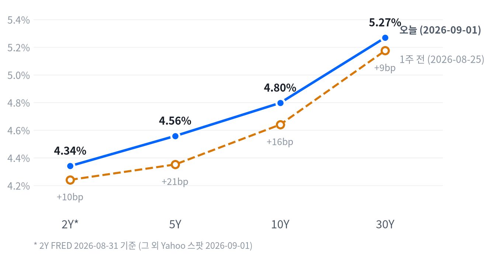

뉴욕 3대 지수가 호르무즈 해협 유조선 피격 보도발 유가 급등과 금리 상승 속에 동반 하락했습니다. 3대 지수가 각각 0.7~1.2%대로 밀렸습니다. WTI는 +5.90%, 10년물은 4.796%로 뛰었습니다.
포트폴리오는 위험자산 비중을 낮추고 지정학 프리미엄이 되살아난 에너지는 담는 쪽으로 움직입니다. 채권과 달러 포지션은 2~6주 시계를 유지한 채 다음 발표를 기다립니다.
호르무즈 해협 인근에서 유조선 두 척이 피격당했다는 보도가 나오며 유가가 급등했습니다. WTI는 +5.90%, 10년물 금리는 4.796%로 5거래일 연속 오르며 2025년 1월 이후 최고치권에 들어섰습니다.
유가 급등이 인플레이션 재점화 우려를 자극했고, 여기에 케빈 워시 신임 연준의장의 잭슨홀 매파 발언까지 겹치며 금리가 밸류에이션 부담을 키우는 경로로 주식을 눌렀습니다. 국채금리 분해로 보면 오늘까지의 금리 상승분은 기대인플레보다 실질금리 쪽에서 더 크게 나왔다는 점에서, 시장은 아직 '정책 긴축 리스크'를 '물가 재점화'보다 무겁게 보고 있습니다.
우리는 다음 세션 종가부터 주식 비중을 소폭확대에서 중립으로 축소합니다. 동시에 에너지는 지정학 프리미엄 재점화를 근거로 중립에서 소폭확대로 올리고, 귀금속은 헤지 수요 이탈 신호로 비중확대에서 소폭확대로 낮춰 담습니다. 채권 숏 바이어스와 달러 소폭 숏은 2~6주 시계에서 그대로 유지합니다.
이 판단은 10년물이 4.5% 아래로 되돌아가거나 이번 주 금요일 8월 비농업고용이 시장 예상보다 뚜렷하게 강하게 나오면 흔들립니다. 반대로 WTI 5일 수익률이 +20%를 넘어서는 추가 공급 충격이 오면 에너지 확대 판단을 한 단계 더 끌어올릴 것입니다.
| 지수 | 종가 | 등락률 | 기준일 |
|---|---|---|---|
| 닛케이225 | 66,311.93 | -0.14% | 08/31 |
| 항셍지수 | 25,566.99 | -0.07% | 08/31 |
| 상해종합 | 3,986.30 | +0.86% | 08/31 |
| DAX | 26,258.11 | -1.17% | 08/31 |
| FTSE100 | 10,824.30 | +0.29% | 08/28 |
| 유로스톡스50 | 6,420.16 | -1.01% | 08/31 |
| VIX | 16.34 | +9.52% | 09/01 |
아시아 증시는 엇갈렸습니다: 상해종합만 나 홀로 +0.86% 올랐고 닛케이·항셍은 소폭 밀렸습니다(평균 +0.22%, 모두 8월31일 마감). 유럽은 미국의 전날 하락 흐름을 이어받아 내렸습니다(평균 -0.63%). 다만 지역 안에서도 갈렸습니다. DAX·유로스톡스50은 1%대로 밀렸지만 FTSE100은 나 홀로 강보합(+0.29%)에 머물렀습니다.
간밤 선물은 저녁 8시(ET) 고점 이후 뉴욕 개장 직전까지 미끄러졌습니다. 나스닥 선물은 새벽 1:30 ET 고점에서 오전 9:00 ET 저점까지 거의 하루 종일 밀려 고저폭이 1.67%에 달했는데, 지정학 리스크 헤드라인이 이 시간대에 집중됐음을 보여줍니다. 대형주 선물도 같은 흐름으로 저녁 8시 고점에서 오전 9시 저점까지 내렸습니다(고저폭 0.88%). 이를 반영해 3대 지수 현물은 각각 -0.66%·-1.27%·-0.44%로 갭다운 출발했습니다.
대형주 지수들은 종가 위치가 41퍼센타일로 '중단 마감', 러셀2000은 12퍼센타일로 '저점권 마감'을 기록해 소형주가 유독 되돌림 매수를 받지 못했습니다. 이 경계(고점권 84.6/저점권 25.0퍼센타일)는 최근 2,253개 세션의 일간 종가 위치 분포에서 오늘 다시 잰 값입니다.
오늘 하루를 지배한 것은 두 갈래입니다 — 호르무즈 해협 유조선 피격 보도가 유가·인플레 우려를 자극했고, 잭슨홀 이후 이어진 매파적 연준 색채가 금리를 밀어올려 밸류에이션 부담을 키웠습니다. 열 개 자산의 공통 움직임을 뜯어보면 42%가 주식 자체에서, 19%가 금리에서 나와 위험자산 전반이 한 방향으로 쓸린 하루였습니다. 상위 세 개 자산까지 넓히면 공통 움직임의 75%가 설명돼, 오늘은 종목·자산을 가려 담아도 분산 효과가 크게 줄어드는 하루였습니다.
일부 소프트웨어·사이버보안 대형주의 실적 여진이 기술주 하락에 부분적으로 더해졌다는 보도도 있었지만, 지수 하락의 주된 동력은 어디까지나 지정학·금리였던 것으로 보입니다.
S&P500은 7,631로 마감해 최근 2년 중 96번째 백분위에 있습니다. 나스닥은 26,100으로 91.3번째 백분위, 러셀2000은 88.5번째 백분위로 두 지수 모두 이 구간에서 손꼽히게 높은 자리를 지키고 있습니다.
VIX는 16.34로 32번째 백분위, 딱 중간 정도 구간이라 오늘 같은 하락에도 공포 심리가 극단으로 치닫지는 않았습니다. 오늘 하락폭은 모두 평소 하루 폭 대비 1배 안팎으로 보통 수준이었습니다.
나스닥은 개장 직후 오전 저점(25,996, 9:30 ET)을 찍은 뒤 오전 내내 반등해 고점(26,260, 11:30 ET, 시가 대비 +0.86%)까지 올랐지만 이후 되밀려 마감은 시가 부근에 그쳤습니다. S&P500도 같은 11:30 ET에 고점(7,664)을 찍은 뒤 14:30 ET 저점(7,611)까지 밀렸다가 소폭 반등해 끝났습니다.
러셀2000은 개장가(2,943)가 그날의 고점이었고 이후 줄곧 밀려 14:30 ET 저점(2,917) 부근에서 마감해 세 지수 중 가장 취약한 흐름을 보였습니다.
지수의 -0.71% 하락 중 기술이 -0.52%포인트로 가장 크게 끌어내렸습니다. 임의소비재(-0.22%p)·금융(-0.10%p)·산업재(-0.08%p)·커뮤니케이션(-0.08%p)도 하락에 힘을 보탰습니다.
헬스케어(+0.06%p)·유틸리티(+0.03%p)·에너지(+0.03%p)는 방어했습니다. 소재·부동산은 기여도가 너무 작아 따로 식별되지 않았고, 이 섹터들로 설명되지 않는 몫은 +0.15%p였습니다.
참여도가 중립이었다는 것은 오늘의 하락이 소수 대형주만의 문제가 아니라 대형주와 평균적인 종목이 고르게 함께 눌렸다는 뜻입니다. 러셀2000이 저점권 마감을 기록한 것은 소형주에서 되돌림 매수가 특히 약했다는 신호이고, 이는 오늘의 하락이 '건강한 조정'보다는 위험회피에 가까웠다는 것을 시사합니다.
스타일별로 보면 성장주 지수가 -1.00%로 가치주 지수 -0.31%보다 더 큰 폭으로 떨어졌습니다. 금리가 오른 날 밸류에이션 부담이 큰 성장주가 더 예민하게 반응한 결과로 보이고, 이는 오늘의 하락이 금리발 밸류에이션 압박이라는 성격을 다시 한 번 보여줍니다.
11개 섹터 중 4개만 올랐고 나머지 7개는 밀렸는데, 그나마 오른 섹터도 유틸리티·헬스케어·필수소비재·에너지처럼 대부분 방어적이거나 유가 수혜 성격이었습니다.
다우존스는 -0.79% 내렸는데, 산업재·금융 비중이 높은 지수답게 오늘 낙폭이 컸던 두 섹터(산업재 -1.37%·금융 -0.88%)의 영향을 함께 받은 것으로 보입니다.
| 지수 | 종가 | 등락률 |
|---|---|---|
| S&P500 Value | 235.80 | -0.31% |
| S&P500 | 7,631.47 | -0.71% |
| 다우존스 | 52,766.88 | -0.79% |
| S&P500 Growth | 138.21 | -1.00% |
| 나스닥종합 | 26,099.77 | -1.03% |
| 러셀2000 | 2,920.13 | -1.23% |
| 섹터 | 등락률 |
|---|---|
| 에너지 | +1.27% |
| 유틸리티 | +0.78% |
| 헬스케어 | +0.66% |
| 필수소비재 | +0.32% |
| 부동산 | -0.16% |
| 커뮤니케이션 | -0.52% |
| 금융 | -0.88% |
| 소재 | -1.18% |
| 산업재 | -1.37% |
| 기술 | -1.53% |
| 임의소비재 | -1.72% |
10년물은 4.796%로 최근 504거래일(약 2년) 중 99.8번째 백분위에 있습니다. 30년물은 5.268%로 같은 기간 99.2번째 백분위로, 두 만기 모두 손꼽히게 높은 자리입니다. 10년물은 1주 전 4.639%에서 15.7bp, 30년물은 5.174%에서 9.4bp 올라 여기까지 왔습니다.
10년물 +3.8bp·30년물 +1.9bp의 오늘 하루 움직임은 평소 하루 폭 대비 각각 0.95배·0.52배로 보통 수준입니다.
| 만기 | 종가 | 전일比 | 1주 전 | 주간 변화 |
|---|---|---|---|---|
| 2Y* | 4.34% | +0.0bp | 4.24% | +10.0bp |
| 5Y | 4.557% | +5.0bp | 4.351% | +20.6bp |
| 10Y | 4.796% | +3.8bp | 4.639% | +15.7bp |
| 30Y | 5.268% | +1.9bp | 5.174% | +9.4bp |

2s10s 스프레드는 45.6bp(2Y FRED 8월31일 vs 10Y Yahoo 9월1일 혼합 기준)입니다. 동일자 FRED 기준으로 다시 보면 41.0bp인데, 두 값이 벌어진 것은 2년물과 10년물의 기준일이 하루 다르기 때문입니다.
이번 주 변화는 동일자 FRED로 비교하는 것이 정확합니다. 1주 전 46bp에서 오늘 41bp로 5bp 좁혀져, 2년물이 10년물보다 더 뛴 약세 속 플래트닝입니다.
5s30s 스프레드는 두 다리 모두 야후 9월1일 동일자로 71.1bp입니다. 1주 전(8월25일 동일자)에는 82.3bp였으니 11.2bp 줄어든 셈입니다.
벨리(5Y)가 30년물보다 더 튄 플래트닝이었습니다. 5년물이 1주 새 +20.6bp로 가장 많이 뛰었다는 것은 벨리 중심 보유 전략이 이번 주만큼은 불리하게 작용했다는 뜻입니다.
국채금리 분해(FRED 8월31일 기준)로 보면 10년물의 하루 변화(+2bp)는 실질금리(+2bp)에서 전부 나왔습니다. 기대인플레는 그날 움직이지 않았는데, 이는 정책 긴축과 기간프리미엄(만기가 길수록 더 얹어 받는 값) 우려가 물가 기대보다 크게 작용했다는 뜻입니다. 다만 이 분해는 어제 데이터 기준이라, 오늘 유가 급등이 만든 기대인플레 상승분은 야후 9월1일 스팟에는 더 담겨 있을 가능성이 있습니다.
10년 기간프리미엄은 8월28일 기준 0.88%로 최근 사흘간 2.9bp 올라, 실질금리 상승이 단순 성장 기대보다 국채 수급·불확실성 프리미엄 쪽에 더 가깝다는 정황을 보여줍니다. 신용시장은 아직 차분합니다.
하이일드 스프레드는 8월31일 기준 2.63%포인트로 1주 전보다 6bp 좁혀졌고, 투자등급 스프레드도 0.80%포인트로 안정적입니다. 국채금리 급등이 아직 신용 리스크로는 번지지 않았다는 뜻입니다.
5년 후 5년 기대인플레(포워드 인플레이션 기대)는 2026년 8월31일 기준 명목 5.01%입니다. 실질금리 2.70%에 기대인플레 2.31%가 더해진 값으로, 하루 새 3bp 올랐습니다. 앞쪽 5년의 잡음을 걷어낸 값이 오르고 있다는 것은 시장이 장기 물가 전망 자체를 조금씩 높여 잡기 시작했다는 신호입니다.
2Y는 FRED 집계 특성상 하루 늦게 반영되는데, 그래서 오늘 같은 날은 2Y가 아직 담지 못한 상승분이 내일 표에 뒤늦게 얹힐 가능성을 열어둬야 합니다.
단기 자금시장도 함께 움직였습니다. 3개월 T-bill 금리는 8월31일 기준 3.78%로 하루 새 4bp, SOFR도 3.68%로 3bp 올라, 금리 상승이 장기물에 국한되지 않고 단기 구간까지 번졌습니다.
주가와 금리의 상관은 최근 60거래일 -0.30으로 여전히 반대 방향이지만, 직전 60거래일(-0.70)보다 확연히 느슨해졌습니다. 금리가 올라도 주가가 예전만큼 예민하게 반응하지 않는 구간이라는 뜻입니다.
장기물 실질금리가 계속 오르고 단기 구간까지 그 압력이 번지는 구간에서는, 30년물 신규 확대를 미루고 5년물 중심의 짧은 듀레이션을 유지하는 편이 낫습니다.
| 통화쌍 | 종가 | 등락률 |
|---|---|---|
| DXY | 99.65 | +0.23% |
| USD/KRW | 1,374.48 | +0.58% |
| USD/JPY | 160.22 | +0.30% |
| EUR/USD | 1.1597 | -0.18% |
DXY는 99.65로 최근 504거래일 중 52번째 백분위, 딱 중간 자리입니다. 반면 엔/달러는 160.22로 92.7번째 백분위에 있어 엔화 약세가 이례적으로 깊은 구간입니다. 원/달러는 1,374로 11.7번째 백분위에 머물러 있어, 오히려 달러가 원화 대비로는 낮은 편입니다.
DXY +0.23%, 엔/달러 +0.30%, 원/달러 +0.58%의 오늘 하루 변동은 모두 평소 하루 폭과 비슷한 보통 수준이었습니다.
엔/달러는 도쿄 새벽 저점(159.63, 1:00 ET) 이후 꾸준히 올라 뉴욕 저녁 고점(160.27, 19:30 ET)까지 하루 종일 우상향했습니다. 국채금리 상승이 미-일 금리차를 계속 벌린 결과로 보입니다.
달러 강세는 위험선호보다 금리차 쪽에서 더 크게 온 것으로 보입니다. 국채금리가 전 구간에서 오르며 미국과 다른 선진국의 금리차가 벌어졌고, 이것이 엔화·유로 대비 달러 매수 유인으로 작용했습니다. 유로/달러도 -0.18% 밀려 1.1597을 기록했는데, 유로존 자체의 재료보다는 미국 금리 상승이라는 같은 경로의 결과로 보입니다.
증시가 위험회피로 흔들린 오늘도 달러가 안전자산 대체제로서 프리미엄을 크게 받지는 못했는데, 주가와 달러의 상관이 최근 -0.25로 직전(-0.69)보다 느슨해진 것과 같은 맥락입니다.
원/달러는 오늘 국내 증시 자체의 고유 재료보다는 달러 강세와 미국 금리 상승을 그대로 따라간 흐름으로 보입니다. 원/달러가 여전히 11.7번째 백분위라는 낮은 자리에 머물러 있다는 것은, 이번 달러 강세가 원화를 이례적으로 깊은 약세 구간까지 끌고 가지는 않았다는 뜻이기도 합니다.
WTI는 90.82달러로 최근 2년 사이 88.9번째 백분위에 있습니다. 금은 4,374달러로 75.8번째 백분위인데, 둘 다 높은 구간이지만 금이 최근 몇 달 사이 더 가파르게 올라온 자리입니다. WTI는 오늘 +5.90%로 평소 하루 폭의 1.83배(큼) 급등했습니다.
금은 -1.29%로 평소 폭의 0.79배(보통) 수준에서 밀려, 방향이 정반대로 갈렸습니다. 천연가스는 +0.72%로 상대적으로 잠잠했는데, 오늘의 급등이 원유·석유제품 시장에 국한된 지정학 이벤트였다는 뜻입니다.
매크로 전달경로에서 본 것처럼 OPEC+의 증산 여력이라는 수급 펀더멘털은 그대로입니다. 오늘의 급등이 실제 통항 차질로 번지지 않는 한, 이 지정학 프리미엄은 언제든 되돌림을 겪을 수 있는 이벤트성 재료로 봐야 합니다. 그래서 이 리포트는 에너지 확대분을 한 번에 다 담지 않고, 지정학 리스크가 실제로 지속되는지 확인하며 나눠 담는 방식을 택했습니다.
호르무즈 해협 인근에서 사우디 소유 유조선과 한국계 소유 유조선이 월요일 밤 발사체 피격을 당했다는 보도가 나오며, 6개월간 잠잠하던 미-이란발 지정학 리스크가 재점화했습니다. WTI는 장중 저점(86.22달러, 1:30 ET)에서 고점(91.01달러, 18:00 ET)까지 거의 하루 내내 밀려 올라 고점 부근에서 마감했습니다.
Brent도 +5.34% 동반 급등했고, WTI-Brent 스프레드는 4.50달러로 평소 수준을 크게 벗어나지 않았습니다. 이번 급등이 특정 유종의 공급 차질보다는 지역 전체의 리스크 프리미엄 재부과로 읽히는 이유입니다.
금은 도쿄 새벽 고점(4,495달러, 1:30 ET) 이후 하루 내내 미끄러져 뉴욕 오후 저점(4,370달러, 15:30 ET) 부근에서 마감했습니다. 국채금리가 이날 내내 오른 것과 같은 방향의 움직임입니다.
오늘의 유가 급등은 수요·달러가 아니라 순수한 공급 리스크(지정학)에서 왔습니다 — 달러 자체는 오히려 소폭 올랐으니(DXY +0.23%) 통상의 달러 역상관 경로로 유가가 오른 것은 아닙니다. 금은 반대로 달러 강세와 실질금리 상승이라는 두 악재가 겹치며 밀렸습니다.
다만 금과 금리의 상관은 -0.07로 사실상 무관해졌습니다(직전 -0.48). '실질금리가 오르면 금이 눌린다'는 통상의 전제가 최근에는 그대로 통하지 않는다는 뜻입니다. 그런데도 오늘만큼은 실질금리 상승이 짧게 다시 힘을 받은 것으로 보입니다.
연착륙 국면으로 이동합니다. 레짐(이 리포트가 성장·물가 모멘텀 조합을 부르는 말)은 매일 다시 그리는 것이 아니라 신규 지표가 나올 때만 움직이는 책입니다. 물가축 점수는 -0.391로 둔화 경계(-0.33)를 오래전에 넘어섰지만, 8월26일 성장축 이동 이후의 5영업일 잠금에 걸려 그동안 교착 판정을 유지해왔습니다.
오늘 신규 발표(JOLTS 구인·이직)로 하루가 열렸고 마침 잠금도 풀려, 물가 좌표가 교착에서 둔화로 한 칸 이동합니다. 성장축은 -0.364(성장축 -0.364)로 그대로 둔화에 머물러 대각선 이동은 아닙니다(인플레축 -0.391). 그 결과 국면은 냉각에서 연착륙으로 바뀝니다 — 물가가 공식적으로 둔화 판정에 들어선 것이지, 오늘 하루 새 경제가 갑자기 좋아졌다는 뜻은 아닙니다.
고용은 보합입니다. 일곱 지표 중 넷이 개선됐고 나머지는 반대 방향이었습니다.
4주 평균 신규 실업수당 청구는 20만5,500건으로 최근 흐름 판정으로는 뚜렷한 개선 추세로 분류됐습니다. 시간당 임금은 전월비 +0.05%로 전월(+0.29%) 대비 완만하게 둔화됐고, 비농업 고용도 -2만3,000명으로 완만히 악화됐습니다 — 청구 지표의 개선과 임금·고용 지표의 둔화가 엇갈렸습니다. 고용축 +0.117
| 지표 | Actual | Forecast | Previous | 발표일 | 판정 | 추세 |
|---|---|---|---|---|---|---|
| JOLTS 구인건수(7월) | 7,271K | 약 7,300K | 7,182K | 09/01 | 하회▼ | 개선(미미) |
| 신규 실업수당 청구(8/22주) | 203K | — | 207K | 08/27경 | 보합 | |
| 신규 청구 4주 평균 | 205.5K | — | 204.25K | 08/27경 | 개선(뚜렷) | |
| 계속 실업수당 청구(8/15주) | 1,778K | — | 1,796K | 08/20경 | 개선(미미) | |
| 비농업 고용 증감(7월) | -23K | — | +20K | 08/07경 | 악화(완만) | |
| 실업률(7월) | 4.1% | — | 4.2% | 08/07경 | 개선(미미) | |
| 시간당 임금 전월비(7월) | +0.05% | — | +0.29% | 08/07경 | 악화(완만) |
발표 내용부터 보면 이렇습니다. 오늘 발표된 7월 JOLTS 구인건수는 7271천 건으로, 시장 컨센서스 약 730만 건을 소폭 밑돌았습니다. 전월은 하향 수정된 718만2000건으로, 이번 발표치가 그보다는 소폭 늘었습니다. 미국 노동통계국(BLS, 원문)은 헤드라인을 "little changed"로 표현했습니다.
세부 구성을 보면 이렇습니다. 채용은 510만 건(채용률 3.2%)으로 전문·비즈니스서비스에서 -18만8,000건 줄어든 것이 두드러졌고, 이는 이번 주 금요일 발표될 8월 비농업고용에 대한 선행 경고로 보도됐습니다. 자발적 이직은 310만 건인데 기타서비스업에서 -4만6,000건 줄었습니다. 해고는 170만 건인데 금융·보험업에서는 -2만2,000건 줄었습니다.
구인건수 자체는 내구재 제조업에서 +7만6,000건 늘어 헤드라인을 방어했습니다. 6월 수치는 구인·채용·총이직이 모두 하향 수정됐습니다(구인 -17만7,000건). 세부적으로는 자발적 이직이 -1만9,000건 줄고 해고는 반대로 +1만9,000건 늘어, 6월 노동시장이 처음 발표됐을 때보다 더 냉각된 모습으로 재평가됐습니다.
정리하면 이렇게 볼 수 있습니다. 헤드라인은 컨센서스를 근소하게 밑도는 완만한 냉각 신호였고 6월 하향 수정도 같은 방향이었습니다. 하지만 시장은 이 비둘기파적 디테일보다 유가발 인플레 재점화와 워시 의장의 매파 기조에 더 크게 반응해, CME FedWatch 확률에는 유의미한 변화가 없었습니다.
JOLTS 자체가 오늘의 레짐 전환(물가축)을 만든 것은 아닙니다. 이 지표는 고용축에만 반영되고, 오늘의 국면 전환은 물가축의 5영업일 잠금이 풀린 결과입니다.
생산·활동은 악화 쪽입니다. 다섯 지표 중 넷이 악화 방향이었습니다.
내구재 주문은 전월비 +1.07%로 두 달 연속 플러스를 기록했지만, 최근 흐름 판정으로는 가장 뚜렷하게 둔화 신호를 낸 지표로 꼽혔습니다. 산업생산은 전월비 +0.2%로 전월(+0.27%) 대비 완만히 둔화됐고, 기존주택 판매는 406만 건(연율)으로 흐름 판정상 완만한 개선으로 분류돼 유일하게 반대 방향을 보였습니다. 생산·활동축 -0.362
| 지표 | Actual | Forecast | Previous | 발표일 | 추세 |
|---|---|---|---|---|---|
| 산업생산 전월비(7월) | +0.2% | — | +0.27% | 08월중 | 악화(완만) |
| 내구재 주문 전월비(7월) | +1.07% | — | +0.54% | 08월중 | 악화(뚜렷) |
| 신규주택 판매(7월) | 607K | — | 678K | 08월중 | 보합 |
| 기존주택 판매(7월) | 4,060K | — | 4,130K | 08월중 | 개선(완만) |
| 실질GDP 성장률 연율(2Q) | 1.5% | — | 2.1% | 07월말 | 보합 |
소비는 악화입니다. 소매판매는 전월비 -0.58%로 전월(+0.25%)에서 뚜렷하게 꺾였습니다.
미시간대 소비자심리는 55.2로 두 달 연속 반등했지만, 최근 3개월 추세 판정으로는 완만한 악화로 분류됐습니다. 넷 축 가운데 가장 약한 축입니다. 소비축 -0.847
| 지표 | Actual | Forecast | Previous | 발표일 | 추세 |
|---|---|---|---|---|---|
| 소매판매 전월비(7월) | -0.58% | — | +0.25% | 08월중 | 악화(뚜렷) |
| 미시간대 소비자심리(7월) | 55.2 | — | 49.5 | 07월말 | 악화(완만) |
물가는 둔화입니다. 여덟 지표 중 셋만 둔화 방향이었지만 그 셋의 강도는 뚜렷했습니다. 소비자물가 전월비는 +0.07%로 전월(-0.42%) 대비 뚜렷하게 둔화됐고, 생산자물가도 전월비 -0.03%로 뚜렷한 둔화를 보였습니다.
근원 소비자물가 전월비도 +0.22%로 완만하게 둔화됐습니다. 반면 소비자물가·PCE·근원PCE의 전년비와 미시간대 기대인플레는 나란히 재가속 방향으로 나와, 월간 물가는 진정되는데 연간·기대 지표는 여전히 높다는 상충이 있습니다. 물가축 -0.391
| 지표 | Actual | Forecast | Previous | 발표일 | 추세 |
|---|---|---|---|---|---|
| 소비자물가 전년비(7월) | 3.54% | — | 3.73% | 08월중 | 재가속(완만) |
| 소비자물가 전월비(7월) | 0.07% | — | -0.42% | 08월중 | 둔화(뚜렷) |
| 근원 소비자물가 전년비(7월) | 2.79% | — | 2.81% | 08월중 | 교착(미미) |
| 근원 소비자물가 전월비(7월) | 0.22% | — | -0.02% | 08월중 | 둔화(완만) |
| 생산자물가 전월비(7월) | -0.03% | — | -0.11% | 08월중 | 둔화(뚜렷) |
| PCE 물가지수 전년비(7월) | 3.70% | — | 3.72% | 08월중 | 재가속(완만) |
| 근원 PCE 전년비(7월) | 3.34% | — | 3.34% | 08월중 | 재가속(미미) |
| 미시간대 1년 기대인플레(7월) | 4.2% | — | 4.6% | 07월말 | 재가속(완만) |
케빈 워시 신임 연준의장의 잭슨홀 매파 발언(8월28일) 이후 CME FedWatch 9월16일 FOMC 25bp 인상 확률은 급등했습니다. 이후 호르무즈발 유가 급등까지 겹치며 인플레이션 재점화 우려가 커져, 확률은 9월1일 기준 약 66%(65~68% 범위로 보도)로 인상 쪽이 우위에 서는 구도로 재편됐습니다. 오늘 신규 지표 발표(JOLTS)가 있어 이 시점 판단을 다시 여는 것이 허용됩니다.
이 판단을 뒤집을 조건이 둘 있습니다. 9월 FOMC 전 발표될 8월 CPI나 8월 고용보고서가 컨센서스를 크게 밑도는 경우입니다. 또는 워시 이후 다른 연준 위원들의 발언이 완화적으로 되돌아오는 경우로, 어느 쪽이든 이 인상 우위 판단은 무효화됩니다.
물가가 공식적으로 둔화 국면에 들어서면 실질금리 정점 통과와 정책 완화 재개 기대가 장기물 총수익과 금 보유비용 하락을 함께 지지하는 경로입니다. 다만 실질금리 자체가 기간프리미엄·수급 요인으로 계속 오르는 중이라 이 경로가 가격에 반영되기까지는 시차가 있습니다. 확인 지표: Core PCE YoY가 3.0% 아래로 내려가거나 장기 실질금리(TIPS)가 추가로 하락하는지, 또는 30년물이 5.05% 아래로 내려가는지입니다.
채권 스탠스(숏 바이어스)는 이 우호적 구조 판단과 부호가 반대입니다. 3~6개월 구조로는 물가 둔화가 금리 하락 쪽으로 작용합니다.
다만 2~6주 스윙 구간에서는 30년물이 여전히 근 20여 년래 고점권 부근이고, 이번 주에도 실질금리·기간프리미엄이 계속 올라 방향이 아직 바뀌지 않았습니다. 30년물이 5.05% 아래로 내려가야 이 구조적 판단이 스탠스에도 반영될 수 있습니다.
성장 쪽 점수가 둔화에 머물지만 물가도 이제 공식적으로 둔화 판정에 들어서면서 두 힘이 팽팽히 상쇄돼 주식은 중립입니다. 에너지는 지정학 리스크 프리미엄이 3~6개월 구조축이 아니라 이벤트성 변수라 수급 펀더멘털(OPEC+ 증산 여력 vs 이란 리스크)과 상쇄돼 역시 중립입니다. 확인 지표: ISM 제조업 PMI가 재가속해 50을 계속 웃도는지, 10년물이 4.5% 아래로 내려가는지, Brent가 3개월 평균 90달러를 웃도는 흐름을 유지하는지입니다.
에너지 스탠스는 오늘 소폭확대로 한 칸 올렸지만 구조적 판단은 여전히 중립입니다. 3~6개월로 보면 호르무즈 리스크는 이벤트성이라 상쇄됩니다. 다만 2~6주 스윙에서는 WTI 5일 수익률이 트리거를 이미 넘어섰기 때문에, 이 국면이 실제로 통항 차질로 번지는지 지켜보며 확대분을 담습니다.
성장 정체 속 물가 둔화가 이어지면 실질금리 스프레드 축소 기대가 달러 약세 경로를 지지합니다. 다만 안전자산 수요와 상대적으로 높은 미국 금리 수준이 이 경로에 계속 맞서는 힘으로 작용합니다. 확인 지표: DXY가 20일 기준 -3% 이상 추가로 내려가는지, 또는 CME FedWatch에서 인하 확률이 다시 확대되는지입니다.
소비축 부진과 무관하게 기업의 AI 데이터센터 투자 사이클이 D램·낸드 수급을 견인하는 독립적 성장경로라 메모리는 우호로 봅니다. AI 인프라는 캐펙스 사이클 자체가 구조적으로 우호적이어도, 장기금리가 높은 구간에서는 할인율 상승이 고성장주 밸류에이션을 압박하는 경로가 이를 상쇄해 중립입니다.
매크로 지표와 사이클이 서로 다른 것을 말하는 대표적인 구간입니다. 확인 지표는 Micron 등 주요업체의 회계연도 가이던스 상향이 이어지는지, 30년물이 5.4%를 웃도는지입니다. 또는 하이퍼스케일러 3분기 캐펙스 가이던스도 함께 확인합니다.
메모리 스탠스는 오늘 중립입니다. 3~6개월 구조로는 AI 데이터센터 수요가 여전히 우호적입니다. 다만 2~6주 스윙에서는 메모리 바스켓의 20일 초과수익이 -4.21%p로 되돌림을 겪는 중이라, 확대를 재개하려면 이 초과수익이 다시 플러스로 돌아서는 확인이 필요합니다.
오늘 JOLTS 발표 직후 채권·주식 시장의 반응은 제한적이었습니다. 헤드라인 구인건수(727.1만 건)가 컨센서스(약 730만 건)를 소폭 밑돌며 비둘기파적으로 나왔지만, 국채금리는 오히려 오르며 발표 이전 흐름(호르무즈발 유가 급등, 워시 의장 매파 발언)을 그대로 이어갔습니다. 이는 시장이 이번 발표의 노동시장 냉각 신호보다 인플레이션 재점화 우려에 더 크게 반응하고 있다는 뜻입니다.
9월4일(금) 8월 비농업고용·실업률 — 시장에서는 2개월 연속 감소로 나오면 인상 확률이 급락하고, 10만 명 이상 회복되면 인상이 기정사실화될 것이라는 해석이 나옵니다. 9월16일(수) FOMC 정례회의 — 현재 CME FedWatch 25bp 인상 확률은 약 66%입니다. 9월29일(화) 8월 JOLTS 구인·이직 — 미국 노동통계국이 예고한 다음 발표일입니다.
어제 걸어둔 트리거들이 오늘 여럿 동시에 충족됐습니다. 주식은 S&P500의 20일선 대비 위치가 -1.04%로 훼손 조건(-1.0%)을 넘어서 소폭확대에서 중립으로 축소합니다. 에너지는 WTI 5일 수익률이 +10.27%로 확대 조건(+6.0%)을 크게 넘어서 중립에서 소폭확대로 올립니다.
귀금속은 금 5일 수익률이 -5.69%로 축소 조건(-4.0%)을 넘어서 비중확대에서 소폭확대로 낮춥니다. 채권과 FX는 확대·축소 조건 모두 미충족이라 트리거가 열리지 않아 그대로 유지합니다. 메모리·AI 인프라도 각각 초과수익이 중립 구간(-4.21%p·-3.98%p)에 머물러 등급을 바꾸지 않습니다.
세 자산군의 트리거가 하루에 동시에 열린 것 자체가 이례적입니다. 지정학·금리·주식이 한꺼번에 흔들린 오늘 같은 날에는 여러 자산군의 트리거가 동시에 걸리기 쉽고, 그래서 이 조정들을 서로 무관한 개별 판단이 아니라 하나의 리스크오프 국면에 대한 반응으로 묶어서 읽어야 합니다.
| 자산군 | 등급 | 유지 | 전일대비 | 논거 | 다음 분기점 |
|---|---|---|---|---|---|
| 주식 | 중립 대형 성장주 선별 유지 | 0영업일 | ▼1단계 | S&P500의 20일선 대비 위치가 -1.04%로 훼손 조건(-1.0%)을 넘어 단기 추세가 흔들려 소폭확대에서 중립으로 축소합니다. | 50DMA 대비 +3.0% 상회 시 재확대, VIX 22 상회 시 방어적 축소 검토. |
| 채권 | 숏 바이어스 5Y 중심, 커브 벨리 OW | 13영업일 | 유지 | 30년물은 5.268%로 여전히 근 20여 년래 고점권 부근이라 숏 바이어스·벨리 중심 보유를 유지합니다. 9월16일 FOMC 인하 신호 트리거는 여전히 미확인입니다. | 30Y 5.40% 상회 시 숏 확대, 30Y 5.05% 하회 시 중립 복귀. |
| FX | 달러 소폭 숏 엔화는 개별 요인 분리 점검 | 13영업일 | 유지 | DXY 20일 흐름은 -0.24%로 여전히 완만한 약세권이라 달러 소폭 숏을 유지합니다. 오늘의 소폭 반등(+0.23%)은 20일 추세를 바꿀 정도는 아닙니다. | DXY 20일 -3.0% 이하 시 숏 확대, DXY 101 상회 시 중립 복귀. |
| 원자재 | 소폭확대 · 소폭확대 에너지 확대, 귀금속 축소 | 0영업일 | ▲1단계 / ▼1단계 | 에너지는 WTI 5일 수익률 +10.27%로 확대 조건(+6.0%)을 넘어 소폭확대로 올립니다. 귀금속은 금 5일 수익률 -5.69%로 축소 조건(-4.0%)을 넘어 소폭확대로 낮춥니다. | WTI 5일 +20% 상회 시 에너지 추가 확대, +3% 이하 되돌림 시 중립 복귀. 금 20일 +15% 상회 시 귀금속 재확대, 5일 -8% 이하 시 중립 검토. |
| 메모리 | 중립 AI 데이터센터 수요는 유효 | 4영업일 | 유지 | 메모리 바스켓의 20일 초과수익은 -4.21%p로 중립 구간에 머물러 있습니다. 마이크론은 -2.64%였지만 삼성전자(+0.38%)·SK하이닉스(+1.14%)는 견조해 업종 내 방향이 갈렸습니다. | 20일 초과수익 +5.0%p 상회 시 OW 복귀, -12.0%p 이하 시 UW 검토. |
| AI 인프라 | 중립 실적 모멘텀 종목만 선별 | 13영업일 | 유지 | 5일 초과수익이 -3.98%p로 중립권 안입니다. 루멘텀이 -5.01%로 가장 크게 밀렸지만 오늘 자체의 신규 재료는 확인되지 않았고, 마빈엘의 부진은 8월28일 구글 딜 매출 인식 시점 이슈의 여진입니다. | 5일 초과수익 +5.0%p 상회 시 테마 재점화로 OW 검토. |
호르무즈 통항 차질이 현실화될 수 있습니다. 유조선 피격이 실제 통항 차단·보험료 급등으로 번지면 WTI가 추가 급등하며 인플레이션 기대가 재차 흔들리고, 9월16일 FOMC의 인상 압박이 더 커집니다. 이 경우 에너지 확대를 한 단계 더 끌어올리고 채권 숏 바이어스를 강화하는 것이 맞는 대응입니다.
8월 비농업고용이 예상을 벗어날 수 있습니다. 9월4일 고용보고서가 2개월 연속 감소로 나오면 노동시장 냉각이 확인되며 인상 확률이 급락하고, 이는 채권·주식 양쪽에 우호적입니다. 반대로 예상보다 뚜렷하게 강한 고용지표가 나오면 인상이 기정사실화되며 오늘의 위험회피가 더 깊어질 수 있습니다.
신용시장으로 리스크가 전이될 수 있습니다. 지금은 하이일드·투자등급 스프레드가 안정적이지만, 국채금리 급등이 이어지면 신용 스프레드로 번질 수 있습니다. 하이일드 스프레드가 반등 전환하면 주식 비중을 추가로 낮추는 신호로 삼습니다.
이 포트폴리오는 자본이 아니라 위험으로 칸을 맞춥니다. 최근 609거래일 가격이 움직인 폭을 기준으로 등급 한 칸이 하루 가격 폭 예산 0.75%포인트만큼 움직이도록 슬리브별 스텝을 정했습니다. 중립 상태에서도 전체 위험의 66%를 주식(코어+메모리+AI 인프라)이 지도록 설계했습니다.
통화 슬리브는 장기 기대수익이 0에 가까워 같은 논리의 예산 중 절반만 씁니다. 오늘 여러 등급이 동시에 움직이며 요구한 위험이 예산의 103.0%로 넘쳐, 레버리지를 쓰는 대신 전 슬리브를 97.09%로 비례 축소해 담았습니다.
이 포트폴리오는 실제 자금이 아니라 모의로 운용합니다. 2026-08-14 설정했고, 벤치마크는 모든 등급을 중립(0)으로 고정한 같은 상품 구성입니다. 거래비용·슬리피지는 반영하지 않았고, 에너지 슬리브는 WTI 선물 상품(USO)이라 현물 유가 등락과 정확히 일치하지 않습니다.
전일(8월31일) 대비로는 포트폴리오가 -0.70%, 벤치마크가 -0.55% 움직여 오늘 하루의 초과수익은 -0.15%포인트였습니다. 8월24일부터 9월1일까지는 포트폴리오 -0.99%, 벤치마크 -0.45%로 격차가 -0.54%포인트까지 벌어졌습니다.
해당 구간에는 8월 28일 결측 세션이 끼어 있어, 거래일수보다 날짜 구간으로 읽어야 합니다. 8월14일 설정 이후로는 포트폴리오 -1.72%, 벤치마크 -1.22%, 초과수익은 -0.51%포인트로 아직 손해를 보고 있습니다.
어디서 까먹었는지는 분명합니다 — 설정 이후 주식 코어가 -0.71%포인트, 메모리가 -0.54%포인트, 귀금속이 -0.31%포인트, AI 인프라가 -0.38%포인트를 깎아 먹었습니다. 에너지가 +0.31%포인트를 벌어 만회의 대부분을 맡았고(달러 약세 +0.01%포인트·현금 +0.00%포인트도 소폭 플러스였습니다), 채권 장기와 단기는 각각 -0.01%포인트, -0.09%포인트로 큰 영향이 없었습니다.
오늘 책에 반영된 등급은 8월31일에 정한 등급입니다. 오늘 결정한 등급 변화(주식 축소, 에너지 확대, 귀금속 축소)는 다음 거래일 종가부터 반영됩니다. 마감 뒤에 정한 것을 그날 종가에 담으면 결과를 미리 보고 산 셈이 되기 때문입니다.
| 슬리브 | 상품 | 비중 | 중립 대비 | 설정 이후 기여 |
|---|---|---|---|---|
| 주식 코어 | SPY | 42.48% | +3.48%p | -0.71%p |
| 메모리 | MU·WDC·STX | 3.38% | -0.12%p | -0.54%p |
| AI 인프라 | MRVL·COHR·LITE·GEV·VRT | 3.36% | -0.14%p | -0.38%p |
| 채권 장기(20Y+) | TLT | 8.15% | -5.85%p | -0.01%p |
| 채권 단기(1-3Y) | SHY | 19.09% | +5.09%p | -0.09%p |
| 귀금속 | GLD | 12.35% | +5.85%p | -0.31%p |
| 에너지(WTI) | USO | 4.12% | +0.12%p | +0.31%p |
| 달러 약세 | UDN | 7.07% | +7.07%p | +0.01%p |
에너지 섹터가 오늘 유일하게 뚜렷한 강세를 보였습니다(+1.27%). 유가 급등의 직접 수혜를 받았습니다. 다만 섹터 지수 상승폭이 유가 급등폭보다 훨씬 작았는데, 대형 에너지주 다수가 업스트림 외에 정제마진 등 상쇄 요인을 함께 갖고 있어서로 보이지만 정확한 원인은 확인하지 못했습니다.
루멘텀이 오늘 개별 종목 중 가장 큰 낙폭을 기록했습니다(-5.01%). 3월 엔비디아가 루멘텀·코히런트에 각 20억 달러씩 성장자본을 투입한 실리콘 포토닉스 테마 종목입니다. 반도체 업종 전반의 위험회피 국면에서 베타가 크게 작용했을 가능성이 있지만, 오늘 하루의 개별 촉매는 검색으로 특정하지 못했습니다.
마이크론과 한국 메모리는 오늘 방향이 엇갈렸습니다. 미국 메모리주(마이크론 -2.64%)는 동반 조정을 받았지만 삼성전자(+0.38%)·SK하이닉스(+1.14%)는 견조했습니다. 오늘 자체의 개별 재료는 확인되지 않았고, 국내외 방향이 엇갈린 이유는 미확정입니다.
| 종목 | 종가 | 등락률 |
|---|---|---|
| 마이크론(MU) | 933.44 | -2.64% |
| 웨스턴디지털(WDC) | 450.44 | -0.02% |
| 시게이트(STX) | 816.64 | -1.42% |
| 엔비디아(NVDA) | 217.44 | -1.51% |
| 삼성전자 | 261,000원 | +0.38% |
| SK하이닉스 | 1,693,000원 | +1.14% |
8월 한 달간 메모리·스토리지 업종은 등락이 매우 컸습니다. 8월17일 일론 머스크의 '메모리 병목' 언급에 급등했다가 8월18일 공급과잉 우려 재부상 보도로 급락하는 등 뉴스에 따라 크게 출렁였습니다. 마이크론 CEO 산제이 메흐로트라는 D램·낸드 수요가 공급을 크게 웃도는 상황이 2027년 이후까지 지속될 것이라고 언급했습니다.
오늘은 미국 메모리주가 동반 조정을 받은 반면 한국 메모리 2종목은 견조했습니다. 회귀 분석으로 보면 메모리 바스켓의 최근 60거래일 초과수익은 -3.08%p입니다(시장 민감도 3.43배 반영 후). 그중 사이즈(대형-소형) 요인이 +2.99%p로 방어했지만, 반도체 업종 요인이 -9.50%p로 가장 크게 끌어내렸습니다.
세 축으로 설명되지 않는 몫은 +2.08%p로 작았습니다. 오늘의 부진은 메모리 고유 재료보다 반도체 업종 전반의 위험회피 흐름에 더 크게 연동된 것으로 보이지만, 반도체 지수 안에 마이크론이 포함돼 있어 두 요인이 완전히 분리되지는 않습니다.
메모리와 나스닥의 상관은 0.58로 직전(0.59)과 비슷한 수준을 유지했습니다 — 메모리는 여전히 반도체 전반의 움직임에 크게 연동됩니다. 투자 관점에서는 AI 데이터센터發 구조적 수요 자체는 유효하다고 보지만, 단기 초과수익이 마이너스 구간이라 스탠스는 중립을 유지합니다.
| 종목 | 분야 | 종가 | 등락률 |
|---|---|---|---|
| 마빈엘(MRVL) | 커스텀 실리콘·네트워킹 | 210.39 | -0.60% |
| 코히런트(COHR) | 광통신 부품 | 272.03 | -2.09% |
| 루멘텀(LITE) | 광통신 부품 | 868.95 | -5.01% |
| GE 버노바(GEV) | 전력 인프라 | 898.53 | 0.00% |
| 버티브(VRT) | 냉각·전력 인프라 | 255.97 | -1.06% |
마빈엘은 8월28일 실적 발표에서 매출·이익은 견조했습니다. 다만 구글과 맺은 최대 1,200억 달러 규모 커스텀칩 딜의 가장 큰 매출 기여 구간이 2029회계연도로 지연된다는 점이 부각되며 당일 -10.28% 급락했습니다. 오늘의 추가 하락(-0.60%)은 이 이슈의 여진 성격이 강합니다.
루멘텀(-5.01%)은 오늘 최대 낙폭 종목이었지만 개별 촉매는 확인되지 않았습니다. GE 버노바·버티브는 AI 데이터센터發 전력·냉각 수요 수혜주로 계속 거론됩니다.
GE 버노바는 최근 분기 컨센서스를 상회하는 실적을 냈습니다. 오늘 보합에 머문 것은 이 구조적 수요 테마가 하루짜리 금리·지정학 리스크오프 속에서도 상대적으로 방어된 것으로 볼 수 있습니다.
회귀 분석으로 보면 AI 인프라 바스켓의 최근 60거래일 초과수익은 -3.66%p입니다(시장 민감도 3.51배 반영 후). 반도체 업종 요인이 -5.72%p로 가장 크게 짓눌렀고, 사이즈 요인도 -2.03%p, 스타일(성장-가치) 요인도 -1.70%p로 모두 부담이었습니다. 이 세 축으로 설명되지 않는 몫은 +5.78%p로 오히려 플러스여서, 세 축의 강한 마이너스를 상당폭 상쇄했습니다.
매크로 전달경로에서 본 것처럼 캐펙스 사이클 자체는 우호적이지만 장기금리 레벨이 할인율 부담으로 작용하는 구간이라, 투자 관점에서는 실적 모멘텀이 확인되는 종목만 선별하는 중립 스탠스를 유지합니다.